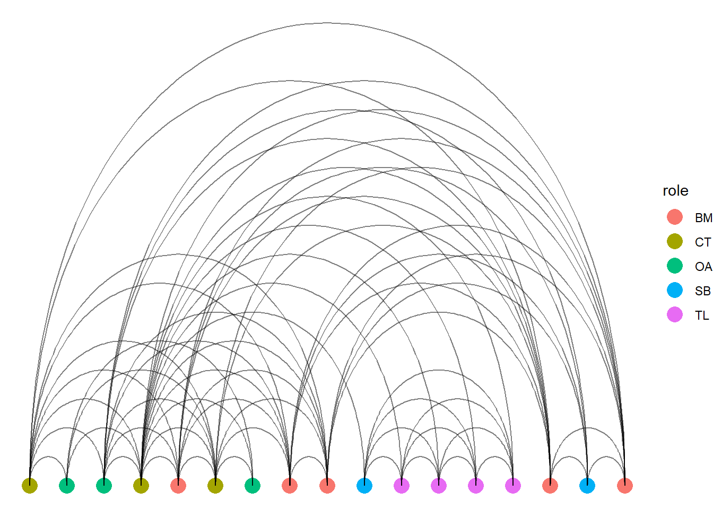
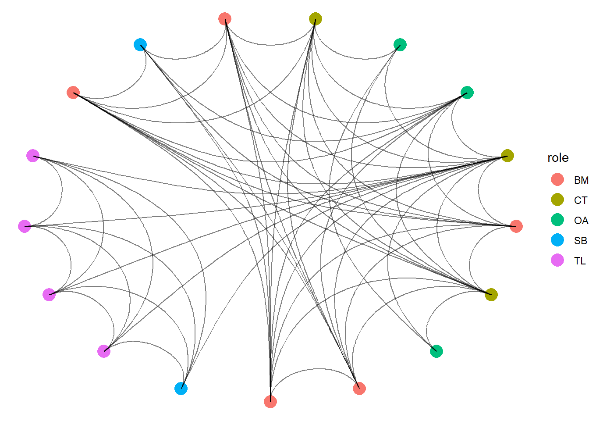
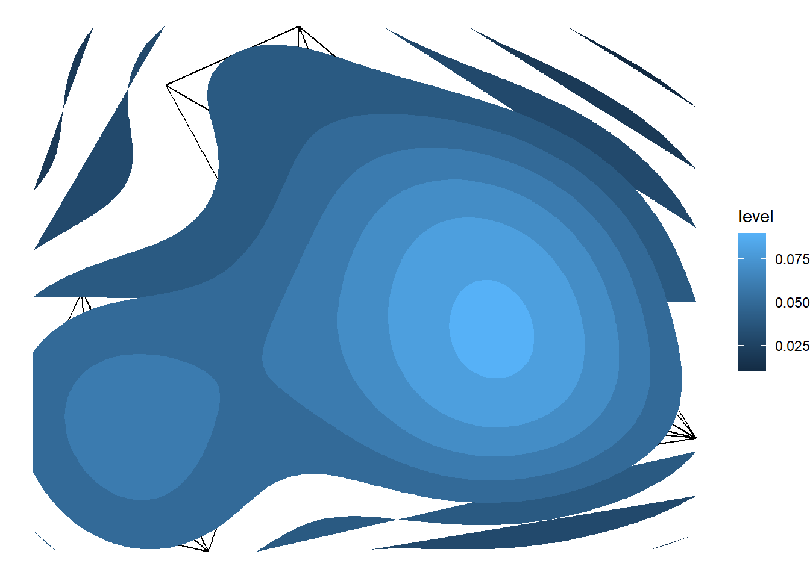
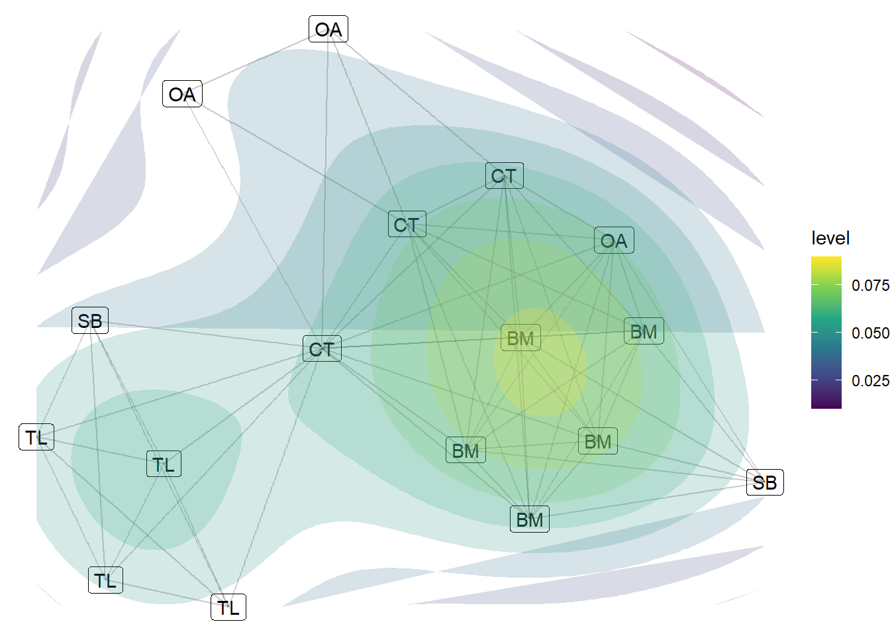
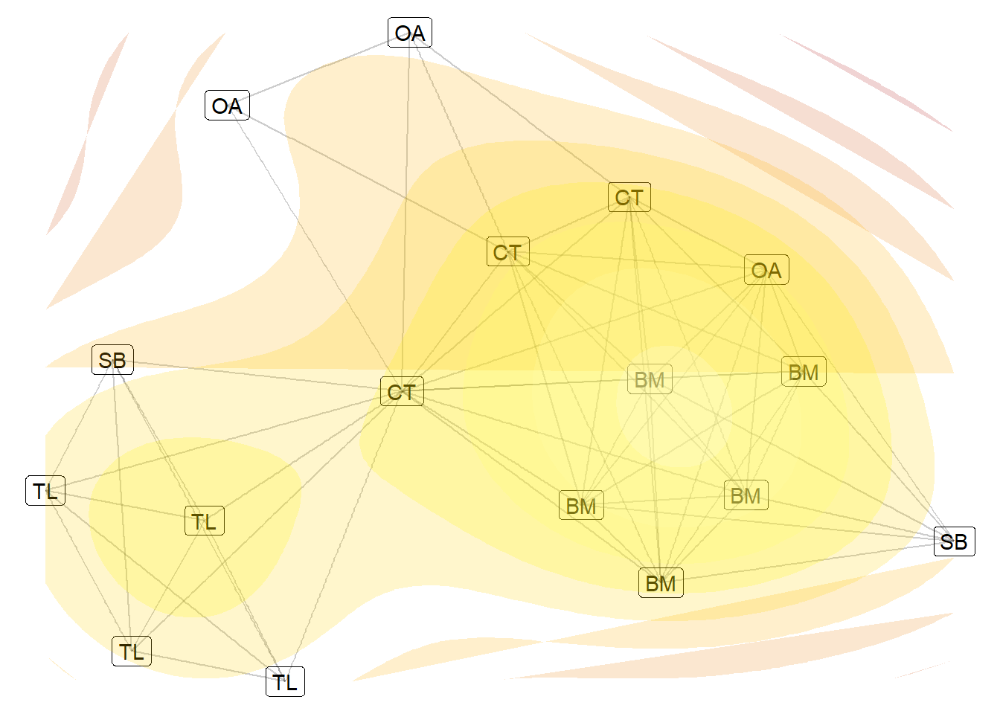
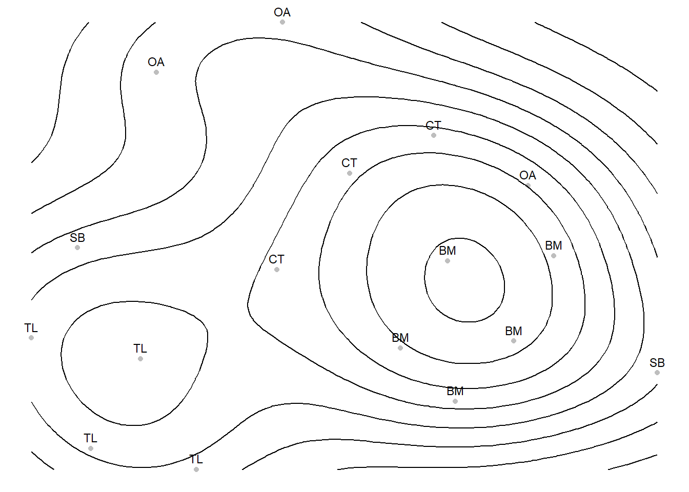

This chapter demonstrates the importance of space and presentation when visualizing network data using the ggraph package. As mentioned before, ggraph follows the coding recipes commonly used with other data visualizations that help build the aesthetic of your presentation. One of the most crucial elements of this aesthetic is the layout.
The layout of a network visual pertains to the location of the nodes and edges within the plotting space. The layout of your data visualization can influence how your reader interprets your data. Here, then, we introduce multiple ways in which you can utilize the space of your network visual through layout options to ensure proper interpretation of your network visualization.
To do this, we are going to use the terrorism data (Koschade 2006; Magouirk, Atran & Sageman 2008). This is a network constructed based on the Jemaah Islamiyah cell that was responsible for the 2002 bombings in Bali. Ties are constructed through interactions between individuals within the terror organization. The roles are recorded for each individual as bomb maker (BM), command team (CT), operation assistant (OA), team lima (TL), and suicide bombers (SB). Below we read in the data and explore it a little.
library(igraph)library(ggraph)library(intronets)# reading data inload_nets("bali.rda")# Exploring the data - 16 nodes with 63 edges and a few characteristicsbali
Great! This is already a cool visualization that is pretty straightforward. Due to the nature of these relationships, the network presents very cleanly without much manipulation. Regardless, let’s play around with it so you can see how the various layouts emphasize different aspects of the network. As you cycle through each visualization, pay attention to how the manipulations to the layout we make stresses different aspects of the network structure and draws your attention. Note, some might look cool while actually distracting the viewer from what you are trying to present. Visualization is an art that is best practiced in private before presented!
4.1 Force Directed Layouts
You need to be mindful that humans are naturally inclined to make assumptions about relationships based on space. Proximity of data points in a graph or figure suggest similarity or relation. This is a vital consideration when presenting relational data such as network data.
We will, therefore, start with what are called force directed layouts. As previously mentioned, these algorithms of visualization cause dissimilar nodes to repel and similarly connected nodes to plot closer to each other. This grouping of nodes aids viewers in their interpretation by leaning into their tendency to assume that proximity = similarity.
To alter the layout of the ggraph visualization, simply use the ‘layout’ option. We will cycle through these force directed visualisations quickly. This network does not change too much between each. This is because the network itself is already very modular. However, this exposes you to several algorithms. With your data, the visualization may look very different between them all. We won’t go into the specifics for how each works, you can search that yourself. In general, they all work under the same principle - maximizing the proximity of similarly connected nodes.
So far we have let the relationships and their nature guide the way we present the network. Force directed layouts spring nodes away or towards each other. The other option is to arrange the nodes in a specific ordered shape. While this goes against tendencies of perception we have discussed so far, there are some benefits to visualizing networks this way. Each manipulation of the network draws your attention to different aspects of the graph. It is worth learning each style so you can try them as you decide on your presentation.
The circle layout places the nodes in a ring on the outside of the graph and places the edges within. This style is often used to emphasize the density of the network. The more interconnected the nodes are the more densely filled the ring is. Another nice thing about this layout is that the edges between nodes are easily traceable across the network. With all nodes out of the way, it is straightforward to see which nodes are connected to which. Notice, for this visual, we have increased the node size and made the edges more transparent.
Next, we turn to a grid layout where the nodes are presented in rows left to right from bottom to top. This kind of layout makes it possible for viewers to focus on each node, or a group of nodes and see how many ties connect to them. Note, however, that this style gets very messy when you have networks with many nodes.
One final manipulation is to lay each node into one horizontal line and display the edges between them. Note, that instead of geom_edge_link, we use geom_edge_arc. If you use the links then it would just present as one solid line groing through each node.
ggraph(bali, layout ="linear") +geom_node_point(size =5, aes(color = role)) +geom_edge_arc(alpha =0.5) +theme_void() ## note the change from link to arc!

You can also force the nodes as linear and circular at once which, with the arcs, presents a spider web style of network.
ggraph(bali, layout ="linear", circular =TRUE) +geom_node_point(size =5, aes(color = role)) +geom_edge_arc(alpha =0.5) +theme_void() ## note the change from link to arc!

These set layouts are nifty! By placing the notes into a specified order, you emphasize the edges. However, be mindful that some of these may look cool (like the spider web) but might not be as useful.
4.3 Contour Visualisations
There are several other network visualization styles that you can play with. The final one, however, that we suggest learning about is the contour design. This design follows the logic of a contour map showing terrain. On a contour map, the lines displaying the contours designate more dense areas when they are placed closer together. Likewise, the contour maps are designed to demonstrate more compact or dense areas of a graph. Often these are also designated with hotter colors suggesting higher density areas.
This style is specifically designed for dense, large networks. Again, remember that the design of your visualization is largely informed by the nature of your networks (number of nodes, structure etc.). Here, the contour style is not really necessary since the Bali terror network is small and sparse. However, it serves the purpose of learning the style.
With ggraph, you can use the stat_density_2d option to calculate the denser areas of the plot (building the aesthetic with the after_stat(level) fill) and place polygons as contour on top. Notice that the contour map doesn’t work perfectly on this network (strands of color beyond the network). As mentioned, this is better used with larger networks.
## Contourggraph(bali, layout ="kk") +geom_edge_link() +stat_density_2d(aes(x = x, y = y, fill =after_stat(level)),geom ="polygon",contour =TRUE) +theme_void()

The challenge with this design is that it only has one use, to demonstrate the regions of the network. However, we can tweak this a little by introducing a color scale and by playing with the labels and transparency a little. This next chunk introduces a more contrasted color scale (dark blue to yellow). This is more accesible for those who struggle to differentiate between hues.
## Contourggraph(bali, layout ="kk") +geom_node_label(aes(label = role)) +# add node labels geom_edge_link(alpha =0.2) +stat_density_2d(aes(x = x, y = y, fill =after_stat(level)),geom ="polygon",contour =TRUE, alpha =0.2) +# make the contours more transparentscale_fill_viridis_c() +# Color scale for contour levelstheme_void()

You can alter the clour scale of the scale_fill_gradient option. We suggest chosing a high contrast
## change colors of the contoursggraph(bali, layout ="kk") +geom_node_label(aes(label = role)) +geom_edge_link(alpha =0.2) +stat_density_2d(aes(x = x, y = y, fill =after_stat(level)),geom ="polygon",contour =TRUE,alpha =0.2) +scale_fill_gradientn(colours =c("firebrick", "orange", "yellow", "ivory")) +# custom scaletheme_void() +theme(legend.position ="none")

There is one final way to create cleaner contour plots and that is to use a slightly different combination of packages. We are going to pull out the layout of the nodes into two data frames. One has the coordinates of the nodes in your plots (the data frame we call layout_df). This also has the names and role characteristics so we can use them. The second makes the contour information based on the coordinates of the nodes (stored in the layout_df).
To help calculate the contour lines, we will use the MASS package and to create a clean contour plot, we will use the trusty ggplot2 package. Let’s split up the setup and the visualisation.
As mentioned, we will first construct the layout so ggplot2 knows where to place the individuals in the plot window. This chunk below first creates the dataframe that holds the coordinates and then calculates the contours based on the density of those coordinates. Do not get too lost in the various functions but focus on the key concepts of what we are doing and why.
# load new packages library(MASS)library(ggplot2)# Compute layoutlayout <-layout_with_kk(bali)layout_df <-as.data.frame(layout)names(layout_df) <-c("x", "y")layout_df$name <-V(bali)$vertex.nameslayout_df$role <-V(bali)$role# Compute 2D densitydens <-with(layout_df, kde2d(x, y, n =100))# create contour data frame contour_df <-expand.grid(x = dens$x, y = dens$y)contour_df$z <-as.vector(dens$z)
Now we are ready to construct the plot. The ggplot2 recipe construction is very similar with ggraph. First we build the aesthetic based on the x and y cordinates we constructed in the layout_df table. Then we build on this based on various other aesthetics (colors and labels). Finally, we build the aesthetic of the geom-contour in a similar way as we have done till now using the after_stat option. We then set the color to black (yes you can change that!).
# Plot with ggplot2ggplot(layout_df, aes(x = x, y = y)) +geom_point(color ="grey") +geom_text(aes(label = role), vjust =-0.7, size =3) +geom_contour(data = contour_df,aes(x = x, y = y, z = z, fill =after_stat(level)),color ="black" ) +theme_void()

4.4 References
For more information about the dataset we used in this chapter…
Koschade, S. (2006). A social network analysis of Jemaah Islamiyah: The applications to counter-terrorism and intelligence. Studies in Conflict and Terrorism, 29, 559–575.
Magouirk, J., Atran, S., & Sageman, M. (2008). Connecting Terrorist Networks. Studies in Conflict & Terrorism, 31(1), 1–16. https://doi.org/10.1080/10576100701759988